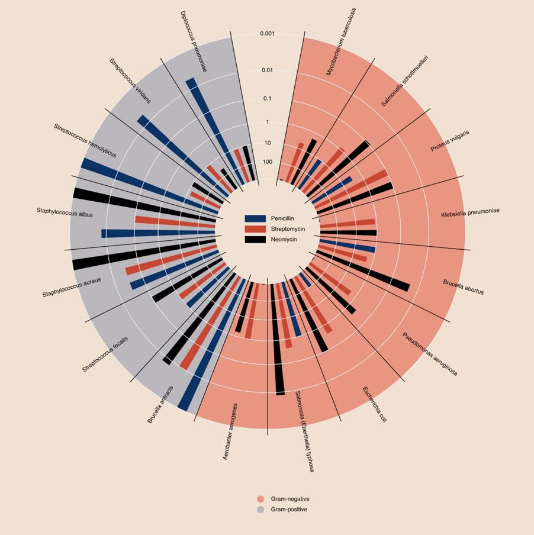

The antibiotics chart, or when the table beats the drawing
In Anscombe's quartet, we saw a chart reveal what a table of numbers concealed. The temptation would be to draw a rule from it: "always make a drawing". That would be too quick. The best visualization is not the most graphical one; it is the one that best answers the question being asked. And sometimes, the best visualization is a table. To prove it, let's take a textbook case — one that comes, fittingly, from healthcare.
A prize-winning duck
In 1951, the designer Will Burtin published, in Scope magazine — sponsored by the Upjohn laboratory — a diagram representing the effectiveness of three antibiotics — penicillin, streptomycin, neomycin — against a range of bacterial species. The object is superb: circular, colorful, scholarly. It won an award. And yet it is unreadable.

Edward Tufte has a word for this kind of object: a duck. Not a sloppy chart — the author's effort and good faith are not in question — but a chart whose primary purpose has stopped being to serve the reader and become a demonstration of craft. The term comes from architecture, and Tufte likes to quote the advice of architect Augustus Pugin: "it is right to decorate construction, but never to construct decoration." Here, the decoration has become the construction.
The same Tufte proposes a measure of what every chart should aim for: the data-ink ratio. Since the data is the main element, it should take up most of the ink; scales, grids, legends and flourishes, the minimum. Burtin's diagram does exactly the opposite: the eye spends all its effort following arcs of a circle, and has almost nothing left to compare values.
It is right to decorate construction, but never to construct decoration.
The real problem: two dimensions
Why is this such a hard exercise? Because the data has two dimensions — the bacteria on one side, the antibiotics on the other — and a chart struggles to represent two categorical dimensions without contorting itself. Burtin chose the circular contortion; others would have stacked bars or multiplied curves. None of those solutions lets the reader do what they really want to do: compare two values. I tried, and I failed.
Yet there exists an object designed precisely to cross two dimensions, one that few think to call a "visualization": the table. Let's take Burtin's data again — the minimum inhibitory concentration, or MIC, that is, the dose of antibiotic needed to stop the bacterium. The lower the value, the more effective the antibiotic. Let's lay it out flat, and color each cell by effectiveness: the greener it is, the more effective.
| Bacterium | Penicillin | Streptomycin | Neomycin |
|---|---|---|---|
| Gram negative | |||
| Aerobacter aerogenes | 870 | 1 | 1.6 |
| Brucella abortus | 1 | 2 | 0.02 |
| Escherichia coli | 100 | 0.4 | 0.1 |
| Klebsiella pneumoniae | 850 | 1.2 | 1 |
| Mycobacterium tuberculosis | 800 | 5 | 2 |
| Proteus vulgaris | 3 | 0.1 | 0.1 |
| Pseudomonas aeruginosa | 850 | 2 | 0.4 |
| Salmonella typhosa | 1 | 0.4 | 0.008 |
| Salmonella schottmuelleri | 10 | 0.8 | 0.09 |
| Gram positive | |||
| Bacillus anthracis | 0.001 | 0.01 | 0.007 |
| Diplococcus pneumoniae | 0.005 | 11 | 10 |
| Staphylococcus albus | 0.007 | 0.1 | 0.001 |
| Staphylococcus aureus | 0.03 | 0.03 | 0.001 |
| Streptococcus fecalis | 1 | 1 | 0.1 |
| Streptococcus hemolyticus | 0.001 | 14 | 10 |
| Streptococcus viridans | 0.005 | 10 | 40 |
MIC in µg/mL (the lower the value, the more effective the antibiotic). Dark green: highly effective; light green: effective; pale tint: weakly effective; white: ineffective.
In a single grid, everything the circle hid appears. You read a value effortlessly. You compare two antibiotics by sliding your eye along a row. You spot at a glance the columns that are greener overall. The color does not decorate: it carries the information, and a box could even flag the best antibiotic in each row.
One table per question
Still, that is a lot to take in at once. The remedy is old — Florence Nightingale already practiced it: one table per question. Rather than showing everything, you decide what you are looking for. Let's ask a precise question: "which molecule should I choose to treat this bacterium?" It is then enough to keep only the best antibiotic in each row in green, and to let the rest recede.
| Bacterium | Penicillin | Streptomycin | Neomycin |
|---|---|---|---|
| Gram negative | |||
| Aerobacter aerogenes | 870 | 1 | 1.6 |
| Brucella abortus | 1 | 2 | 0.02 |
| Escherichia coli | 100 | 0.4 | 0.1 |
| Klebsiella pneumoniae | 850 | 1.2 | 1 |
| Mycobacterium tuberculosis | 800 | 5 | 2 |
| Proteus vulgaris | 3 | 0.1 | 0.1 |
| Pseudomonas aeruginosa | 850 | 2 | 0.4 |
| Salmonella typhosa | 1 | 0.4 | 0.008 |
| Salmonella schottmuelleri | 10 | 0.8 | 0.09 |
| Gram positive | |||
| Bacillus anthracis | 0.001 | 0.01 | 0.007 |
| Diplococcus pneumoniae | 0.005 | 11 | 10 |
| Staphylococcus albus | 0.007 | 0.1 | 0.001 |
| Staphylococcus aureus | 0.03 | 0.03 | 0.001 |
| Streptococcus fecalis | 1 | 1 | 0.1 |
| Streptococcus hemolyticus | 0.001 | 14 | 10 |
| Streptococcus viridans | 0.005 | 10 | 40 |
A single question: the best antibiotic for each bacterium, in green. Everything else fades away.
The answer jumps out, row by row. And you could produce other tables for other questions: "for which bacteria is our arsenal weakest?" would call for a return to graded color, or even a composite score of the three molecules. One question, one table.
This is not the reflex of an epidemiologist starved for rigor. It is exactly the choice Worldometer made during COVID: beneath its single chart, a simple table by country, serving as both a measuring instrument and a navigation tool. While others were building spectacular maps, the humblest object of visualization won there too.
One caveat, and a major one: this table answers one question — in vitro effectiveness — and that one alone. The real medical decision involves many others: toxicity (neomycin, so brilliant on paper, is too toxic for general use), spectrum, distribution within the body. The visualization shed light on one dimension; it did not make the decision. It is always so: a good visual makes a question legible, it does not exempt you from judgment.
What this changes for the decision-maker
Anscombe and Burtin say, at bottom, the same thing by two opposite routes. Anscombe: do not trust a summary number, look at the shape. Burtin: do not trust the prettiest chart, look at the question. In both cases, the tool is never good or bad in the absolute — it is so relative to what you are trying to know.
That is exactly the reflex most corporate dashboards lack. People stack pie charts and gauges because "it looks visual", when a three-column colored grid would answer — faster — the question the executive is really asking. As with the COVID dashboards, the useful reflex is not "what handsome chart can I make?" but "what is the question, and what answers it most directly?".
Next time someone offers you a chart, do not ask whether it is well made. Ask what question it helps settle. Sometimes the answer will be a scatter plot. Sometimes, it will be a table. And that is not an admission of defeat: it is the sign that the right question was asked.
← All articles